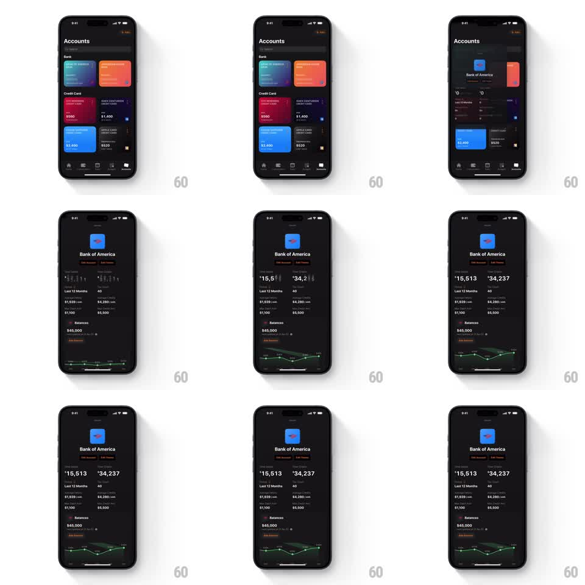

Media
Frame-by-frame

Rebuild this animation 1:1: Finma's account stats flip - on the dark Accounts screen, opening Bank of America expands its card into a detail page where the big stats ("Total Spent $15,513", "Total Income $34,237") roll into place digit by digit like a split-flap ticker, followed by the monthly grid and balance.

Rebuild this animation 1:1: Finma's account stats flip - on the dark Accounts screen, opening Bank of America expands its card into a detail page where the big stats ("Total Spent $15,513", "Total Income $34,237") roll into place digit by digit like a split-flap ticker, followed by the monthly grid and balance.
## Integration
Integration: stack-agnostic spec - springs given as stiffness/damping, timed motions as duration + curve; map every value to your framework and animation library of choice.
## Scene
Dark "Accounts" screen: Bank section (Bank of America blue card, orange card), Credit Card section (red "$950", dark "$1,400", blue "$2,400", gray "$520" cards), bottom nav. Bank of America detail: logo, "Bank of America" title, "Edit Account / Edit Photo" actions, two big stats ("Total Spent $15,513" white, "Total Income $34,237" white), "Last 12 Months" grid ("$1,939/mo", "$4,280/mo", "$1,100", "$5,500"), "Balances $45,000" with a date, and a small green line graph.
## Motion spec
Pattern: vertical rolling ticker digits with staged section reveals.
- Tap the card: it expands to full width (spring ~300/20, 300ms) and pushes to the detail layout, sibling cards collapsing away (200ms).
- Each big stat: digits roll vertically into place like a flip ticker - each digit column cycles through values (fast spin 400ms, decelerating ease-out) and locks with a small bounce (translateY overshoot 2pt, spring ~340/18); columns stagger 40ms left to right.
- The Last 12 Months grid fades in cell by cell (30ms stagger), its numbers rolling shorter spins (250ms).
- "Balances $45,000" rolls last (300ms) as the green graph draws (stroke trim, 500ms).
- Back: the sections reverse out (150ms) and the card returns to the list (spring ~300/20).
## Calibration
- Digit columns roll downward for increases and upward for decreases.
- Commas are static; only digits flip.
## Reduced motion
Numbers crossfade in (200ms); no rolling.
## Don't miss
- The two hero stats roll simultaneously, not sequentially.
- The line graph is small, green, and secondary - it draws after the numbers.